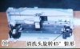

|
|
| 当前位置：电脑报电子版 > 1999 年 > 39 期 > OA专刊 > 我的世界你最懂——喷墨打印机的结构与工作原理 |
| 《 我的世界你最懂——喷墨打印机的结构与工作原理 》 |
| 编者按：学习电脑的热潮已在神州大地掀起，很多人都已经知道电脑内部是怎么回事了。但对于不常见的办公外设，则不那么熟悉，除了平常偶尔用用了解到操作面板上的几个按钮的用处之外，对内部的东西就一无所知了。为此，小编特地组织了这一组文章——《我的世界你最懂》，介绍常见办公外设如三类打印机、传真机、扫描仪等的内部结构，让读者朋友对这些外设“知其然，亦知其所以然”。 喷墨打印机小巧精致，输出质量较高且价格低廉，已经成为中小型办公和家用领域的主要设备之一。本文通过对市场拥有量较大的惠普DeskJet 200（下称HP200）的结构拆分和讲解，使读者对这些“高档电器”不再陌生，揭开其神秘的面纱。 打印机外观 现在请出我们的主角，请大家热烈鼓掌！诸位读者朋友，图1中小巧玲珑、人见人爱的小东西便是今天可怜的受难者了……HP200的结构紧凑，外壳全部采用ABS工程塑料压制而成，需要用户进行控制的地方也很少（见图1）。面板上仅有三个必需的开关：电源开关、进纸按钮、墨盒更换按钮。左下角是根据纸张材质控制压纸垫的拨动挚（其作用后面将要介绍），正下方是导纸框。平时可以将导纸框旋转竖放以节省空间。在导纸框的左后方有一个塑料定位栓，可以根据进纸宽度限制纸张向左倾斜。 打开打印机的前面板，我们可以小范围地看见内部结构（见图2）。前面板的作用是防止灰尘进入打印机内部，同时也是为了更方便地更换墨盒。看见图2右下角的拨动挚了？它的作用是根据纸张厚度调整喷头与打印平台之间的距离，现在处在“平纸”位置，往上拨动则到达“信封”位置（纸张较厚时采用）。 它的背面（见图3）设置了一个串行接口（与计算机串行口连接）和一个电源插孔（30V）。 电气结构 好了，现在让我使点力气，将打印机的背板拆下……怎么多出来几个白色的小塑料块？呀！！！原来是用力过度，将背板与前板的塑料扣件弄断了……读者同志千万别学俺拿你家的宝贝开刀，弄坏了俺可不负责!HP200的电路板仅有一块（见图4），打印机的中枢部位全部安置在上面，尽管笔者也算个无线电爱好者，可是仍然看不懂这些型号古怪的集成电路的具体分工。还好本文仅仅是结构介绍，看官你也不是冲着“维修指南”来的，就请大伙儿凑合点吧。 传动结构与调整挚 现在再让我使点劲（知道知道，这回俺可得使巧劲）……咯咯……啪嗒……好了，前面板扳下来了，最精密的部件－－传动和纸张调整结构显现出来了（见图5）。一、传动结构分为进纸传动、打印头传动、清洗头传动三部分  1进纸传动 1进纸传动进纸传动由（按照纸张进出的顺序）金属导纸板、导纸滚轮（见图6，在打印机的底部）、步进电机及减速齿轮组、塑料压纸片、导向轴、棘轮（见图8）组成。 由导纸框导入的纸张，平时放置在金属导纸板上。进纸时，金属导纸板下面的塑料件（图中看不到）抬起，托着金属导纸板，使纸张紧贴导纸滚轮（见图7）。接着步进电机加电转动，经齿轮组减速后，带动导纸滚轮进入打印机内部。这时金属导纸板下面的塑料件回原位，金属导纸板落下，而纸张在打印机内绕一圈后被平平地压在塑料压纸片下，只在打印头下方稍稍露出一点准备受墨。 打印头打好一行后，纸张在导纸滚轮的带动下向前移动一个单位，再让打印头打一行，如此反复便将一张纸打印完毕。不断前进的纸张通过导向轴和棘轮之间的缝隙，从面板的出纸口伸出。 从图片和介绍中可以看出，喷墨打印机对进纸和控制考虑得非常周到。实际上，越是精密的设备，对操作对象考虑得越多。有一些在我们认为没有必要的地方，设计者也都深思熟虑，这么做可以扩大产品的使用范围，而用户则感到使用方便，很少出故障。 2打印头传动 打印头传动包括打印头步进电机及减速齿轮、传动履带、打印头移动轨道（上、下共两条）、移动式打印信号线等构件（见图5）。打印头步进电机加电转动，经减速齿轮组将动力传递给传动履带，再由履带带动打印头水平移动。打印头移动轨道的作用有两个：一是可以使打印头在水平方向上平滑地移动，二是限制了打印头在上下、前后方向上的移动。在打印头移动过程中，与其相连的信号线一直“默默跟随”，“尽心”地传送墨滴控制信号。 如果说进纸传动决定了墨滴在纸张竖直方向上的布置的话，那么打印头的传动则决定了墨滴在纸张水平方向上的布置。这两套传动系统构成了喷墨打印机的“心脏”。 3清洗头传动 随着喷墨打印机分辨率的提高，墨滴越来越细小，打印出的图像越来越漂亮。细小的墨滴意味着打印头需要相当精密，停止打印后，墨嘴处不可以留有残余墨滴。在打开电源、关闭电源和打印了若干个字（随型号的不同而不等）之后，控制程序都必须发出指令使打印头归位，让清洗头传动机构檫去墨嘴上的残墨或污物。 清洗头传动包括传动电机、齿轮组、清洗头（塑胶材料或高分子材料制成）等，如图10所示。清洗头归位后，传动电机动作，由齿轮组带动清洗头完成复杂的清洗作业。清洗传动机构的齿轮组作用与前面所诉的齿轮组不同，它除了减速作用外，还通过一些构件完成清洗头的圆周转动→上下移动→圆周转动的动作。对HP200打印机而言，清洗过程是：打印头归位→清洗头转动90°使让塑胶材料朝上→打印头短距离地来回移动让塑胶材料洗去墨嘴上超精细滤网的墨滴→清洗头再次转动90°让塑胶材料横向放置→准备打印。如果是关闭电源，则打印头移动到“回”型塑胶口处，后者再向上移动，顶住墨嘴。“回”型塑胶口的设置是为了减少打印机内部气流的扰动所带来的灰尘在墨嘴上附着的问题。图9和图10分别显示出清洗头转动到不同位置时的情况。 二、纸张调整结构分为材质调整和厚度调整两部分 1材质调整结构如果是材质较硬的纸张，拨动挚（见图5左下角）向左拨动，带动打印平台上的金属压纸垫右移，纸张穿过压纸垫再经过导向轴，使纸张平整、无倾斜地输出；如果材质较软（信纸），拨动挚向右拨动，带动打印平台上的金属压纸垫左移，纸张不穿过压纸垫，这样可以防止纸张被压纸垫压住而发生撕裂现象。 2厚度调整结构 如果使用普通纸张，厚度拨动挚放置在如图5所示的位置；如果要打印信封等较厚的纸张，要将厚度拨动挚向上抬，带动下部的那条打印头移动轨道略微向上移动，这样打印头也相应上移，防止厚纸接触到墨嘴而损坏昂贵的打印头。 喷打的结构和工作原理就介绍到这儿了。希望读者看了这篇文章后，能够对喷打的结构和工作原理有个大致的了解，放心大胆地用它“打”出更加绚丽的世界来。 (安徽 夏师卿 钱钧) |
| 下载本期推荐软件 | 页 首 |
| 《电脑报》版权所有，电脑报网站编辑部设计制作发布 |